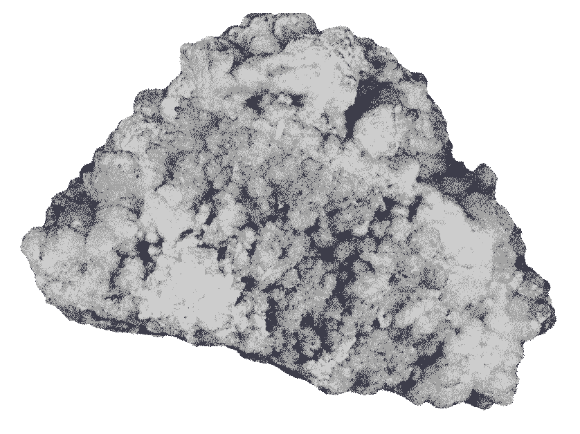
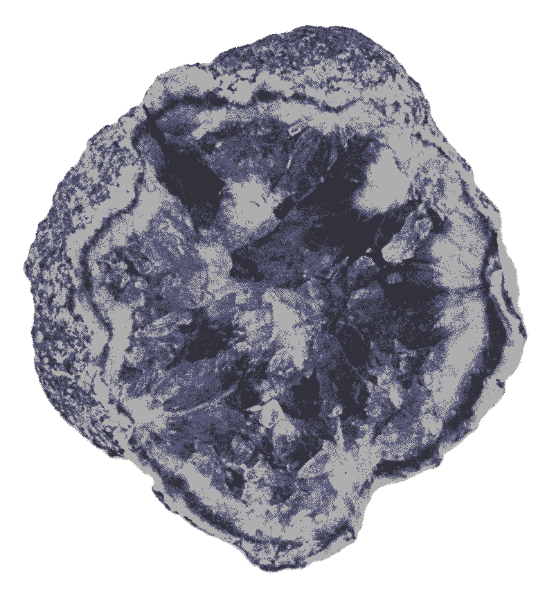
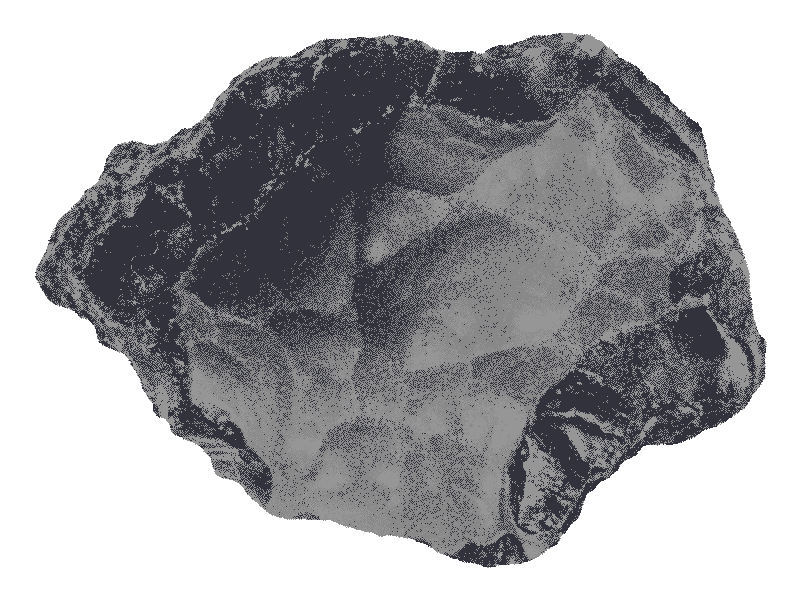
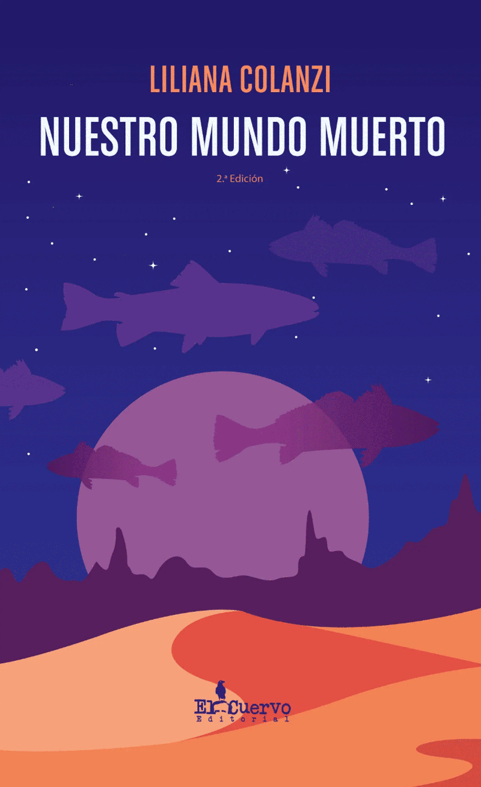
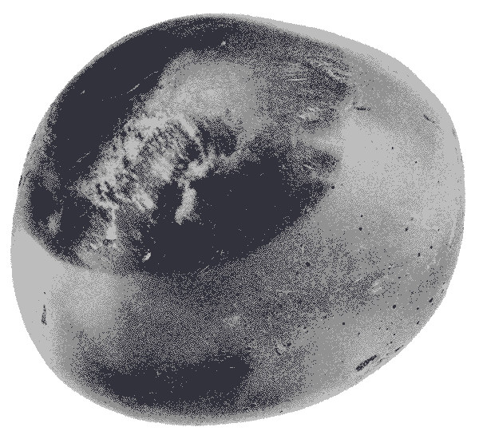
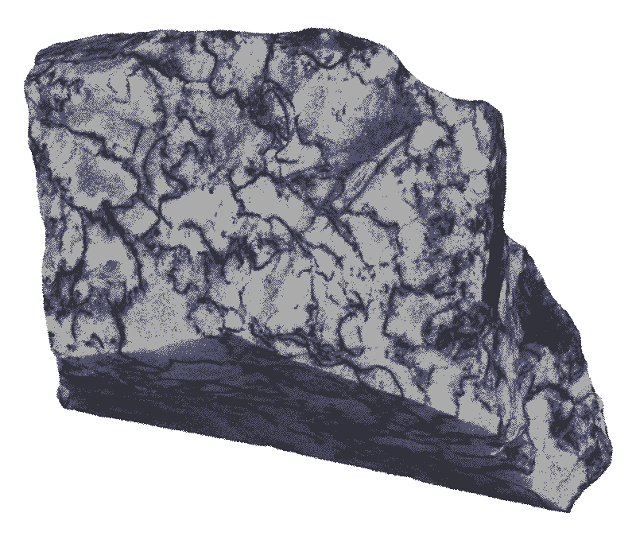
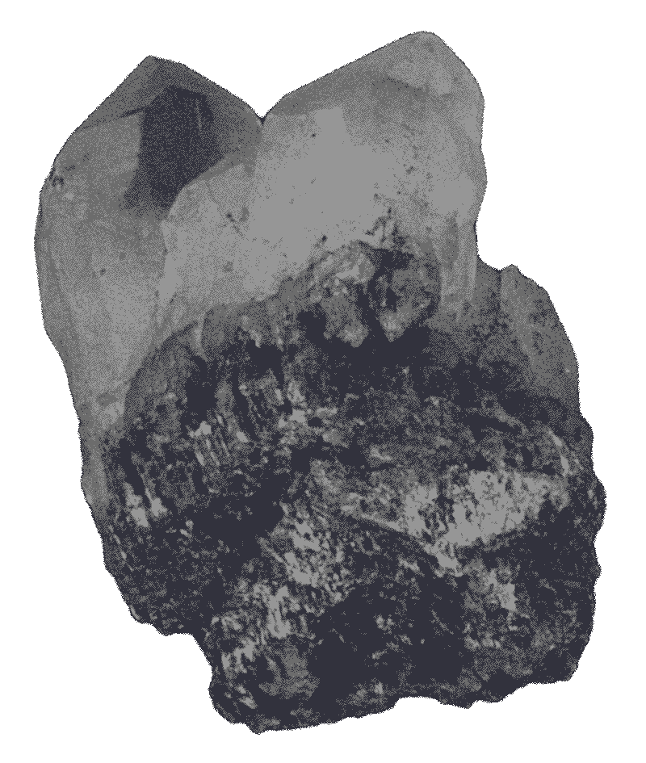
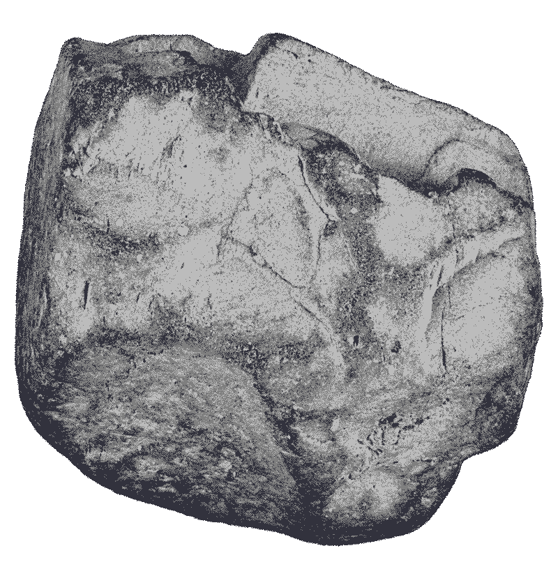

Nube Nueve es un ejercicio de rastreo, un archivo que revela dinámicas terrestres al consignar asuntos de meteoritos.
La propuesta consiste en dos libros: el primero presenta una cartografía con todos aquellos bólidos avistados, detectados, consignados por entusiastas, aficionados, científicos y/o dispositivos automáticos. El segundo opera como una
colección y consignación de datos e imágenes con cuestiones económicas, políticas, místicas y animistas que giran alrededor de estos objetos espaciales.
En el sitio web Nube 9 se agrupa y hace visible tanto la propuesta gráfica como a la información dispersa, olvidada o pasajera relacionadas.
Es un espacio que motiva los juegos de relaciones.
A de Arte AN de Animación ANTR de Antropología ARQ de Arquitectura C de Cómic CE de cosas extrañas D de Documental E de Exposiciones L de Libro LI de Libro Ilustrado M de Música NG de Novela Gráfica P de Película PI de Película Independiente S de Serie VJ de Video juego
Nube Nueve (Esfera de Tensegridad) Richard Buckminster Fuller + Shoji Sadao
Nube nueve es el nombre que Buckminster Fuller le dio a sus hábitats aéreos creados a partir de esferas geodésicas gigantes, que
podrían levitar calentando ligeramente el aire interior por encima de la temperatura ambiente.
De hecho, una Nube Nueve podría estar atada o flotar libremente, desplazándose según las condiciones climáticas y ambientales, o podría
ser enviada a una zona de catástrofe humanitaria para servir como refugio de emergencia. Las personas que necesitaran de asistencia y cobijo podrían vivir en la esfera mientras fuera necesario, incluso mientras se les transporta por aire
hasta otro emplazamiento con mejor atención y con garantía de seguridad.
Con globos de este tipo podrían construirse “miniciudades” o pueblos aerotransportados de miles de personas.
Nube Nueve es un proyecto de consulta
y de permanente construcción.
Nube Nueve es un estado y un lugar en el que Dante, en la Divina Comedia, se vio envuelto y cegado por la luz "cielo más cielo", un momento en el que lo terrenal y lo extraterrenal se unen, en el que lo ordinario y lo
extraordinario proponen una imagen.
Diseño del sitio web Jerónimo Velásquez y José Sanín
2012 P-SFEW.US
Ante la lluvia de negras cenizas y trozos de rocas que caían del cielo, buscaron consuelo el uno en el otro. El vacío de cada uno se había fundido en un gesto conocido para afrontar lo inminente.
SEEKING A FRIEND FOR THE END OF THE WORLD (BUSCANDO A UN AMIGO PARA EL FIN DEL MUNDO) – Lorene Scafaria
2016-2020 A-S.MX
Oyen la canción sentados en el techo, uno frente al otro; a medida que pasan los minutos finales, una extraña luz —que es visible incluso en el día— aumenta de tamaño por cada hora que pasa en la noche. Todo debe irse,
ese es el pacto.
Sideral – Marcela Armas/Gilberto Esparza

1953 L-LSPA.RU
El mundo se deforma, se torna irreconocible y se vuelve contra nosotros. El campo parece refulgir con irisadas auroras boreales, aunque no es la primera vez.
Un miedo primario e incomprensible nos inunda con un cromatismo inexistente en la Tierra.
Nadie sabe qué está pasando, pero llevamos atónitos largo rato. Las luces y los sonidos son extraños y la naturaleza empieza a alterarse.
Lucky Starr and the Pirates of the Asteroids (Lucky Starr, los piratas de los asteroides) – Isaac Asimov (Paul French)

2020 D-FVDW.DE
He intentado buscar historias a las que adherir y, al parecer, no son tan visibles. ¿Será, acaso, la desilusión de lo que sucede hoy en día? Pero, si todo es perfecto, ¿es el presagio de una nueva vida? Al parecer no me
es visible.
No habla y no siente la necesidad de hacer cosas que le sean típicas, luego murmura: “lo he intentado, es decir, adentrarme en la naturaleza y encontrar… la cercanía”.
Esta es la historia.
Fireball: visitor from darker worlds (Fireball: visitantes de mundos oscuros) – Werner Herxog

2021 M-EM.ES
Willem afirma: “Allá donde el sol nunca se pone, justo en aquellas zonas donde las piedras del cielo han dejado huellas de sus rastros, los animales y las plantas han hecho su hogar, el viaje mítico ha creado de forma
brillante la inmensa tundra que visualiza lo que pasa por su cabeza”.
Busca, se tropieza y sufre a medida que atraviesa el sádico universo, los animales y las plantas pertenecen al mundo exterior, todo desaparece.
El Meteorito – David Montañés
2016 L-NMM.PE
No pudo dormir durante dos noches. Tuvo uno de esos momentos en los que la pérdida de compostura le llevó a presagiar con precisión el evento.
“Se los juro, no quería hacerlo, no quería predecir lo que todos desestimaron. Mierda, está sucediendo ahora, tenemos que encargarnos”. De nuevo pierde la compostura y despotrica con una voz que les muestra a los otros los visos de su
sádico universo.
Está condenada, no quiere mirar hacia arriba.
Nuestro mundo muerto – Liliana Colanzi

2013 PI-C.US
Algo ha cambiado, Shane lo ha dicho, lo que parecía una fantasía se ha convertido en realidad y Shane no lo deja de repetir: algo ha cambiado; aunque su hermano nos había avisado de aquella posibilidad.
Desorientados y desconcertados nos preguntamos qué hacer para que todo funcione de nuevo en conjunto, aquello que hemos visto desde el abrigado interior de nuestras casas. Ann observa que, con suerte, llegará el día en que tendremos que
enfrentar lo sucedido, nosotros somos solo visitantes, no pertenecemos aquí, “somos los visitantes”, reitera.
¿Qué sucederá ahora?
Coherence (Coherence) – James Ward Byrkit
1993 L-HG.GB
En busca del depositario o el propiciador de estos deseos, he pasado del mito a la ciencia, de la ciencia al mercado, del mercado a las instituciones y de las instituciones a lo divino. La historia de esta obsesión ha
estado escondida y es conocida solo de un modo fragmentario.
No sé qué me han hecho tus ojos, pero me han llevado por un rumbo inesperado. Has cavado agujeros en los que se han relegado las leyendas. Estoy dispuesto a escarbar en
aquellos orígenes, convencido de que si algo cae del cielo, no es propiedad de nadie.
The hammer of God (El martillo de Dios) – Arthur C. Clarke
2010 PI-NO.AR
No imagino qué harás ahora en las entrañas de este territorio, en medio de los zumbidos que durante siglos han revolcado estos suelos.
Lihuen, parado frente a la roca que había encontrado en la gran explanada, le responde: “todo lo que hay abajo, hay arriba. Me interesa el desentierre, la idea de que existe algo que merece salir a la superficie, algo que ilumine. Es
habitual para nosotros, los habitantes del desierto, al observar el cielo, conversar sobre las señales que aparecen en él”.
Con un leve rictus, Robert Haag observa la roca, la filma pensando que, en estos tiempos de lo enorme, es mejor hablar de lo pequeño, de los actos invisibles que ayudan a encontrar “nuevos caminos”. Ha tratado de encontrar más rocas como
aquella en este mundo que no volverá a ser el mismo.
La nación oculta – Juan Carlos Martínez

1913 L-LEAR.DEU
Mustio, le responde que sí, que probablemente. “Ella es una buena persona, es una buena mujer”, se comenta Simón a sí mismo al haberle respondido de forma afirmativa y sin titubeos.
Una sonrisa desesperada y de autodesprecio se refleja en la mirada del hombre. Piensa: “debe haber alguna forma de detener lo que, en apariencia, se viene. Acabo de verla inquieta porque no interioriza de manera más profunda lo
acontecido, solo esa falsa
tranquilidad con que se afrontan los miedos. Pero hay algo sorprendente y extraño en ver en ella el fin del mundo, como si hubiera llegado de nuevo ese esperado día del año”.
—Te ves perfecta —pronuncia Simón.
Lesabéndio Ein Asteroiden-Roman (Lesabéndio An asteroid novel/ Lesabéndio, novela de un asteroide) – Paul Scheerbart
2013 A-PM.US
La cosa empieza a salirse de las manos, así que arroja la bolita buscando librarse de la responsabilidad. Argumenta que el juego es desconcertante porque todo podría precipitarse de la manera más absurda y si es capaz de
tomarse tan en serio el arrojo de la bolita, es porque en ello está la posibilidad del otro lado, el del absurdo. No se debería convertir aquello que se ama en un trabajo.
Porsche with Meteorite
– Chris Burden
1982 M-MRR.ES
El hilo que los une es muy débil: quien aparece detrás, en la fotografía, es un personaje cortés pero no tiene carisma. Aún así, se ve en él una búsqueda de trascendencia que se amalgama con la del coreano que se
encuentra a la derecha y que es uno de esos que se excita cada vez que conversa sobre El libro del destino. Es encantador escucharle. Sobre el alemán, tengo por decir que es de aquellos que interrumpe una explicación para hacer un chiste
malo ante el que no puedes evitar carcajearte. Cada uno de ellos, sin embargo, transmite una cierta sensación de incomodidad, tal vez debido a la proximidad física.
Son personajes cuya pasión y visión del mundo resulta tan
memorable como su extravagancia o su patetismo, como el aficionado aquel ubicado en la parte más distante de la toma, en la sombra. Son pedazos de otros cuerpos que están en el espacio y juntos dan una visión más amplia de sus orígenes y
de su destino.
Meteorito rock and roll – Parchis
2019 P-COS.ZAF
Cuando el sol se estaba poniendo, cada uno percibió la presencia del otro. Dos completos desconocidos que estaban destinados a conocerse. En ese momento, el más grande siguió moviéndose, pero el pequeño, al ver la
realidad a la que se enfrentaba, decidió desaparecer. A partir de entonces, para el otro hay algo que le hace coincidir en el mismo espacio a la misma hora; busca cada día: “sin saberlo, siempre estoy buscando algo, una persona, un lugar,
un elemento; no recuerdo qué es o dónde está, pero sé que es importante para mí”. Este sentimiento le consume y lo único que le resta es continuar.
Color out space (El color que cayó del espacio) – Richard Stanley
1996 A-SBM.GB
Lo único que le ha quedado es un pedrusco verde y oscuro del tamaño de la cabeza de un chihuahua. Entonces lo toma del suelo, lo gira y nota que aquello que en algún momento había sido un obsequio ahora tiene el propósito
de destruirlo todo. Saber de aquel misterio le hace sentirse culpable, así que toma un lápiz y un papel donde empieza una lista de lo que necesitaría el “Mundo del futuro”.
Ha encontrado la más bella, la más preciada y codiciada de todas. En su búsqueda ha aprendi-do a diferenciarlas y a trabajarlas. Al tomar la piedra, sobreviene el remordimiento: sabe de dónde emerge ese sentimiento que ha
hecho que no le guste lo que antes le entusiasmaba. Sin embargo, debe lidiar con ello; también sabe que, a esta altura, todo ha cambiado. Tal vez la única salida sea encontrar otra más bella, otra más codiciada que esta.
La météorite de Hodges (El meteorito de Hodges) – Fabien Roche
2020-2021 E-VC.MX
Algo sigue vivo, un aire abrasador lo envuelve y le hace parecer como si transpirara en silencio. Percibo su presencia, es como un gigante que observa desde la distancia. Vigilante de la cotidianidad; la aparición de sus
sonidos ha revivido y exorcizado los sueños y recuerdos que había descuidado. El final para cualquier relato de este tipo debe ser un gran etcétera.
Versos del cosmos (Verses of the Cosmos) – Manuel Díaz, Mariana Paredes, Nahum
2019 D-ANDE.FR
Estaba pensando que debía marcharse, lanzarse, embarcarse en aquella búsqueda que tanto se había prometido. Cumplir aquel sueño que lo obligaría a tomar decisiones extremas y rápidas implicaba aprender nuevos métodos y
salirse de la zona conocida.
Al instante de tomar la decisión, la máquina soltó un agudo y plano pitido. El verde irradiaba por toda la habitación.
Astéroïdes, le nouvel ELDORADO spatial? (Asteroides ¿un nuevo Dorado en el espacio?) – Guillaume Lenel
2019 L-CC.AR
Estamos dispuestos a todo, así que seguiremos cavando. Para el forastero, los pequeños granos de acero que han sido arrojados a sus pies pueden ser el punto de partida. Entonces saca de su bolsillo el
pedernal.
–MQ
Campo del cielo – Mariano Quiros
2014 D-CCC.AR
Gemía porque nunca supo qué era lo que quería. Pero, al verlo, descubrió que el verde esme-ralda era su color. Desde ese instante, el pedrusco que había recogido sanaba sus heridas.
El color que cayó del cielo – Sergio Wolf

1968 A-QM.US
Todavía no entiendes, nunca entenderás. Se lo decía a la cara mientras le miraba a los ojos con profunda pena. Para sorpresa de todos, el joven traga con cuidado su bocado, luego descansa los cubiertos en la mesa, se
levanta y comenta: “¡Bravo! Hasta ahora no hay víctimas”.
Ambos le esperan, así que con su rostro moribundo les lleva a la puerta, los conduce por un lugar anegado de arena, como un desierto donde es difícil caminar sin hundirse. La pareja se queja, él hace caso omiso. Al rato
se voltea y les pregunta: “¿por qué quieren destruir la fe?”
Last Night (La última noche) – Don McKellar
1953 P-IFOS.US
Hace tiempo que maquinan. Han trazado los planos detallados esperando que el procedimien-to tenga éxito. Al enrollar los documentos, una pequeña hoja se suelta y cae al costado del sofá. Tomi se agacha, la recoge y lee:
“La culpa, querido Brutus, no está en nuestras estrellas, sino en nosotros mismos”. Tomi piensa: “Siempre hemos tenido contacto con ellos”.
It came from outer space (Vinieron del espacio/ Llegó del más allá) – Jack Arnold
2016 L-VVM.AR
“Amigos, si tienen tiempo vengan a visitarnos”. Estas palabras resonaron expulsadas de sus bocas, mientras el grupo se dirigía hacia la luz. Los tuareg aún sonreían mostrando siniestramente sus dientes, mirándoles fijo
y sosteniendo en sus manos los trozos de la “Belleza Negra” que aún eran suyos.
Variaciones / La visita del Meteorito – Rubén Metinni
2014 M-MS.FR
Es risible, ellos únicamente veían lo obvio, deseaban algo que no sabían muy bien cómo era, podían ver los lagos y los ríos; aunque las cosas nunca son lo que parecen. De vez en cuando, al visitar la llanura, oían aquel
primitivo instrumento, su aparición marcaría un comienzo.
Meteorites – Yann Tiersen
1979 VJ-A.US
—A estas alturas sería extraño, pero vamos a hacer un trato —responde Polín a David—. Puedo parecer dura en mi relación, pero hay una intensidad y un calor emocional que esperaría compartir cuando tenga un encuentro con
otro.
—Me has dejado bastante frío, no esperaba toparme con ese olor rancio de la nostalgia y las promesas —contesta David.
Asteroids – Lyle Rains/Ed Logg
2014 LI-M.GB
La bestia ha muerto, ha llegado un nuevo tiempo, hemos peleado con piedras y con palos para dejar de sentir el peso de su sombra sobre todos nosotros. Destruimos aquel sentimiento de extrañamiento y el proceso implicó
cortar de tajo.
Metatron – Jack Teagle
1587 A-TCB.FR
—¿Con qué soñabas en aquel momento?
—Con que nada formaría parte de mi vida, pero ahora ha germinado un mal invisible y sin sospechar, aquel sentimiento me ha tocado, me ha desviado; siento que es mío y tengo la impresión de que toda la atención precipitó mi caída.
The comet book
1994 P-WW.CA
Se han convertido en mi “cosa”. He trabajado duro para acercarme a lo que observé como una raya roja y brillante. Lo he puesto todo junto, aunque muchas veces otros se han encargado de alterar las interpretaciones y los
simbolismos de aquel pozo mágico tan profundo y arcano.
Without Warning (Sin Advertencia) – Robert Iscove

1963 - 1964 L-LC.IT
No voy a mentir: todavía me ocurre, y las opciones me abruman. Aunque he pensado que lo que quiero hacer en mi vida es dominar la navaja, aquel instrumento tan delicado y detallado, que nunca es cursi. Quiero canalizar
finalmente mis incertidumbres tallando formas esféricas, extrañas. He pensado en los pequeños detalles con una fascinación casi morbosa. Luego las guardaría en un recipiente hermético de cristal.
Le Cosmicomiche (Las cosmicómicas) – Italo Calvino
2021 A-AHWWHM.NL
Esto me animó y me dio confianza, así que ahora pertenezco al programa que ha monopoliza-do mi atención. Dicen que en los años siguientes, esta revolución tecnológica alterará total-mente la realidad; se sabrá sobre
todas aquellas formas incandescentes y multicolores, y sobre las que vendrán y las que ya se fueron. He soñado a menudo con ello.
Ann Hodges: The Woman That Was Hit By A Meteorite (Ann Hodges: la mujer que fue golpeada por un meteorito) – Jelle Havermans

2017 LI-MMHFC.GB
Le encantaba hablar de la ciencia de los objetos, en cualquier lugar y en cualquier momento. No conozco a nadie con tanta energía. Ha causado efectos profundos en otras vidas, pero su fascinación por los pedruscos
convirtió su aventura en una pesadilla. El impacto fue de los fuertes, fue magnético, fue su puesta de sol.
My mind hides a friendly crater (En mi mente se oculta un crater amistoso) – Sophie Hollington
2021 P-DLU.US
Todo lo que realmente hice fue sacar una piedra, una piedra vieja que causó una ola de calor tan densa que extendió un aire de extraña fantasía por el lugar. La había ubicado en un banco que se encontraba junto al lago,
donde muy pocos la veían.
Don't Look up (No mirren arriba) – Adam Mckay
1908 L-CM.FR
Vi muy pocos, pero finalmente vi algunos. Estaban dispuestos en una bolsa que Julia abría y cerraba a su gusto. Mientras tomábamos -el algo-, Julia comentó que eran especiales, que lo presentía. Sobre todo, hablaba del
verde como si hubiera arribado de Mercurio. Ella tenía razón, el verde era el especial, cuando abría la bolsa, brillaba.
La Chasse au météore (La caza del meteóro) – Jules Verne
2021 L-DE.US
Ha pasado un año desde los eventos y Susana se ha mantenido al margen desde que presen-ció la caída. Lo único que conserva de ese instante es un fragmento de roca que guarda en su bolso, como una señal ante el olvido.
Down to earth (A la Tierra) – Betty Culley
2015 A-FFS.GB
Se apresuró a recogerlos todos, sabía que el peso le ayudaba a mantenerse estable. Y caminar con los bolsillos llenos le hacía sentir que aún pertenecía al mundo.
“Esta es mi última trayectoria contigo. Una criatura como yo no puede acompañarte hasta donde marca tu destino”. Alí le anunciaba la noticia a través de la pantalla y, mientras tanto, las formas a su alrededor perdían
el color.
The black stone of kaaba (La piedra negra)
2016 P-BS.NL
Al incluir cuidadosamente la Ureilita, observó con detalle la selección de plantas que acompañaban a la roca en el interior de la pequeña caja de cristal. Construir Terrarios se había vuelto su afición, le parecía que
en ellos la eternidad estaba condensada.
Beyond sleep (Más allá del sueño) – Boudewijn Koole
2010 D-EJ.CL
Le intrigaba el horrible silencio que reinaba. Le recordaba aquellos momentos en los que, de súbito, el espectáculo de luces verdes emergía ante sus ojos, paralizándolo y transportándolo a la zona oscura. Nunca había
podido recordar ningún suceso completo, aunque las imágenes le venían a raudales.
Una estrella en el jardín – Juan Manuel Díaz Cofré
1927 L-COS.GB
“Te han cambiado y no me imagino qué harás ahora”.
Desde que las tuvo en sus manos, Julia quería unirlas, no sabía para qué; un impulso la moti-vaba y a la vez la llevaba a esa sensación de angustia que nunca se iba del todo y que la con-sumía. En esos momentos, el vigor la dominaba. Se
llenaba de una cierta intensidad. Se había visto a sí misma como su protector, pero también entendía que lo único que le quedaba por hacer era esperar. Así que, incluso desde antes, esperaba.
The colour out space (El color que cayó del cielo) – H.P. Lovecraft
2016 AN-KNNW.JP
“Escuchen lo que nos rodea, todo aquello que absorbe la pesadumbre que producimos, lo que hemos llamado -la ansiedad del mundo-”. Mientras Lucia bruñe las formas irregulares que ha intentado disponer con cierto orden, la voz que emerge del dispositivo le recuerda que es el momento de recoger su labor, guardarla y salir de compras.
Kimi no Na wa (Your name/ Tu nombre es) – Makoto Shinkai
2014 M-M.US
Miraban el reflejo del agua entre las piedras; en esa tarea llevaban un buen tiempo. Se habían detenido porque escucharon un sonido férreo que los llevó a atender aquella peculiaridad. Clara miraba agachada en la pequeña curva de la ribera y, mientras escuchaban en silencio, su voz irrumpió inundando los ojos de Lucio.
Meteorite – Mariah Carey
1943 L-LPP.FR
“Me encuentro agarrado a ti; lo que siento es tan grotesco que decirlo me destruiría. El placer que me proporcionas me lleva a intuir que probablemente eres una mala señal”. Al terminar de oír el correo, Jairo acaricia la tecla negra que le señala lo incierto. Siente su forma y decide, finalmente, oprimirla. Advierte aquel sonido tan usual que hoy solo lo estremece.
Le Petit Prince (El principito) – Antoine de Saint-Exupery
1850 L-TSLAR-US
Crece el desierto. Aquella voz le ensordece. Ve desde la cumbre la zona verde que se desva-nece en sus bordes irregulares. Desde que oyó decir que el brote ha cambiado la forma, trepa la montaña para percatarse de la división.
The scarlet Letter: A Romance (La letra escarlata) – Nathaniel Hawthorne
2012 A-FS.GB
Sabía que al hendirla acabaría con todo lo que, por mucho tiempo, se había obrado. Como lo mata la ansiedad, aquella manía de escarbar lo dejaba tan vacío que, por momentos, pensaba que tanta poesía y música no servía de nada para algo que duraba tan poco.
Fields of the Sky (Campos del cielo) – Katie Peterson
Llevaba tiempo escarbando, a veces, se detenía, se miraba los dedos para luego lamerlos como un animal. En este quehacer se tomaba su tiempo, degustaba el sabor de lo matérico, la herrumbre, algo que no lograba reconocer porque de donde venía ese gusto, no existía.
Find a falling star – Harvey N. Nininger
2012 P-DB.KR
Doomsday book (El libro del fin del mundo) – Yim Pil-Sung / Kim Jee-Woon
1979 P-S.RU
Stalker (LaZona) – Andrei Tarkovsky
1941 NG-EM.BE
L’Étoile mystérieuse (La Estrella misteriosa/The Shooting Star) – Hergé